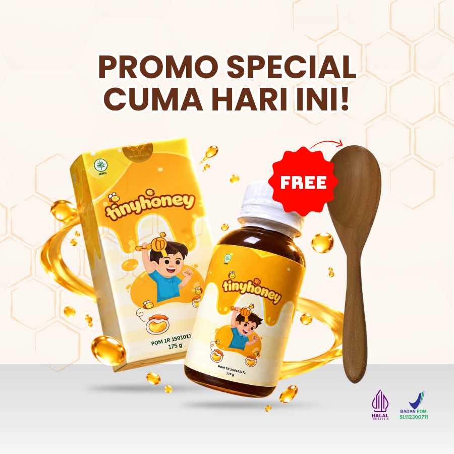

😣 Sering Kembung & Rewel
Perut si kecil sering terasa begah dan tidak nyaman, membuatnya rewel sepanjang hari hingga nafsu makannya menurun drastis.
TinyHoney menghadirkan kebaikan madu murni dengan jahe merah dan daun pepaya sebagai sumber prebiotik alami untuk memperbaiki pencernaan, menjaga imunitas, serta mengembalikan nafsu makan si kecil dari dalam.
*Cocok & aman dikonsumsi untuk anak usia 1 tahun ke atas

Perut si kecil sering terasa begah dan tidak nyaman, membuatnya rewel sepanjang hari hingga nafsu makannya menurun drastis.

Makanan sering ditolak atau dimuntahkan lagi sehingga Bunda cemas nutrisi harian dan tumbuh kembangnya tidak tercukupi.

Tubuh sering kurang fit sampai harus izin tidak masuk sekolah, sehingga anak kehilangan momen berharga untuk belajar dan bermain bersama temannya.

Terlalu banyak klaim iklan yang membingungkan hingga Bunda ragu mana pilihan alami yang benar-benar aman dan terbukti.
Ketika saluran cerna anak terganggu, perut terasa begah dan kembung, makanan apa pun akan terasa tidak nyaman di lidah mereka. Akibatnya, anak GTM (Gerakan Tolak Makan) dan tubuhnya mudah drop.
Tenang, Bunda gak perlu bingung lagi. Tinyhoney hadir dengan komposisi yang jujur dan jelas: memadukan madu murni bersama 6 ekstrak herbal pilihan yang bekerja selaras memperbaiki pencernaan dari akarnya.


Memberikan karbohidrat sederhana sebagai sumber energi harian si kecil serta kaya senyawa bioaktif/antioksidan alami.

Kandungan prebiotiknya membantu mendukung kenyamanan dan kesehatan pencernaan anak.

Membantu pemenuhan prebiotik alami untuk mendukung mikrobioma dan pencernaan anak.

Membantu meredakan keluhan begah, kembung, dan rasa tidak nyaman di perut anak.

Membantu merangsang proses pencernaan dan mendukung nafsu makan anak secara alami.

Membantu merangsang proses pencernaan dan sekresi empedu, sehingga mendukung proses pencernaan anak.

Mengandung serat larut (pektin) yang membantu menjaga kelancaran proses pencernaan agar anak lebih nyaman saat BAB.
Manisnya pas, segar, dan tidak ada bau amis.
Sedikit kental namun cair di mulut, tidak serat atau nyangkut di tenggorokan anak.
Bisa langsung diminum dari sendok, atau dicampurkan ke dalam air putih, susu hangat, maupun camilan sehat favorit si kecil!
Pagi dan sore hari setelah makan.
Cukup 1 sendok makan per konsumsi.
Aman dan direkomendasikan untuk anak usia 1 tahun ke atas.

FREE Sendok KayuYa, Tinyhoney sudah memiliki izin edar resmi BPOM dan tersertifikasi Halal yang nomor registrasinya tertera jelas pada kemasan produk.
Betul, Tinyhoney menggunakan madu murni berkualitas yang dipadukan dengan 6 ekstrak alami (habbatussauda, temulawak, kunyit, daun pepaya, apel, dan jahe merah).
Sangat bisa! Kandungan temulawak, kunyit, daun pepaya, jahe merah, dan madu di dalamnya memicu nafsu makan anak secara alami dengan cara menyehatkan pencernaannya terlebih dahulu.
Tinyhoney dapat mulai dikonsumsi anak usia 1 tahun ke atas.
Rasanya manis alami dan segar tanpa aroma amis, serta teksturnya pas di tenggorokan. Jika anak pemilih, Bunda bisa mencampurkannya ke dalam susu atau jus buah favoritnya.
Yuk Bunda, bantu penuhi prebiotik alaminya dan jaga saluran cernanya bersama Tinyhoney. Kami siap membantu menjawab pertanyaan seputar kebutuhan si kecil.
📲 Pesan Tinyhoney & Konsultasi via WhatsApp
Ketenangan Hati Bunda Adalah Prioritas Utama Kami
Izin Resmi BPOM: Teruji klinis dan terdaftar resmi di Badan Pengawas Obat dan Makanan.
Sertifikat Halal: Terjamin kehalalan dan kehigienisannya di setiap tetes.
Cerita Bunda Lainnya